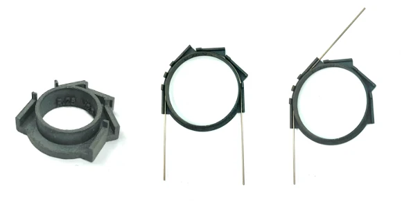
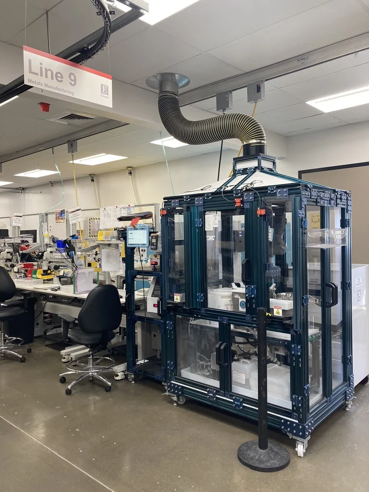
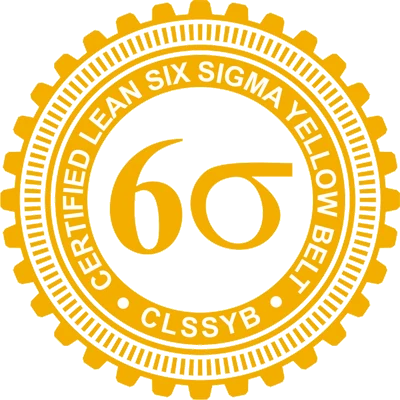

Edwards Lifesciences
Nitinol characterization & manufacturing
Across two summer internships at Edwards Lifesciences, I studied Nitinol springback and supported manufacturing process improvements, including custom tooling and automated passivation.

Summer 2023 · Nitinol characterization
I researched Nitinol springback using a design of experiments and regression analysis. The resulting data supported shape-set engineers’ tooling decisions. I also 3D printed custom metal tooling for shaping and heat-treating Nitinol.


Summer 2024 · Automated passivation
- Helped implement an automated passivation system for heart-valve components.
- Supported robot programming and manufacturing documentation, including SOPs, MES, and EQLs.
- Applied design-for-manufacturing principles to improve the basket used to hold product during passivation.


Process improvement
I earned Six Sigma Yellow Belt certification through a DMAIC project addressing chemical-reaction risks on manufacturing lines. The project’s projected annual savings exceeded $20,000.

Skills: Design of experiments, DFM, Regulated documentation